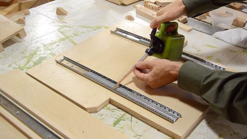

I like to varnish a machine once it's done. It makes the sawdust easir to brush off,
prevents it from getting stained with dirt, and makes it look nicer.
I like to varnish a machine once it's done. It makes the sawdust easir to brush off,
prevents it from getting stained with dirt, and makes it look nicer.
So I took the machine all apart again for varnishing and final touches.
Before varnishing the base, I still needed to glue some dust guards on. These ar wooden rails, about a quarter millimeter (0.010") less tall than the drawer slides. They prevent dust from getting into the glides from the sides.
I clamped these on with some long clamps. If you don't have clamps long enough, you could put a screw through the mounting holes for the tracks to help push them down for gluing, or just weigh them down.
When I previously assembled the table, I lined up the narrow tracks on the base precisely, and let the larger tracks on the sled (right side) align themselves to those.
But with the wooden dust guards on the base, I can no longer put my spacers against the rails in the base, so I ensured the rails in the sled were aligned (image at right), and left the screws in the base loose to let those rails align with those.
 Before putting it bach together, I oil all the ball tracks with some relatively thick oil.
Sliding the top back in. after the initial 20 cm or so, the ball cages will have hit the end of their run, and a lot of force is needed to drag the sled all the way in. In fact, I ended up using a bar clamp to push it all the way.
I also made some dust guards for either end of the sled. These, for the most part, prevent dust from getting in from the ends. However, with the plunge sled pulled back, the sled extens beyond the base, so some dust could still get in from below.
I marked where the slots on these go straight off my part. To position it precisely, I clamped it in place and drilled the screw hole though both parts...
 Then added a countersink to the rail, and screwed it in place.
Then added a countersink to the rail, and screwed it in place.
 The pantograph parts, ready for reassembly.
The pantograph parts, ready for reassembly.
It's easiest to get the shaft in hen the links are at 90 degrees to each other. With the hole 1.5 cm from the end and from the sides, lining up the corners of the links also lines up the holes.
It also helps to grind a slight taper to the ends of the rods.
Pantograph assembled. Inserting the last pin, on one side, the holes on the other side lined up nearly perfectly. Very satisfying, and indicative that there should not be any significant geometry erroror remaining.
Attaching the rods to the router. The router has one plastic knob to lock down one of the rods, but two screw threads for set screws for the other rod. I found some screws in my junk bin that fit.
I also removed the smooth plastic face from the front of the router. The plastic face allows the router to glide better, but I don't need this, and removing it gets me 2 mm closer to the router.
Fully assembled, with electrical switch installed.
Next: Hold down clamp
Back to Main index
{kind=link}
{kind=link}
{kind=link}
{kind=link}
{kind=link}
{kind=link}
{kind=link}
{kind=link}
{kind=link}
{kind=link}
{kind=link}
{kind=link}
{kind=link}